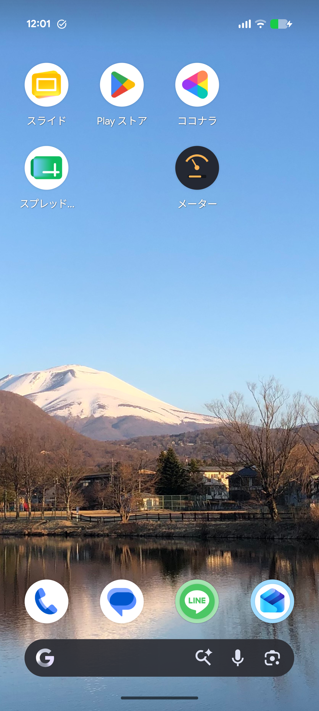
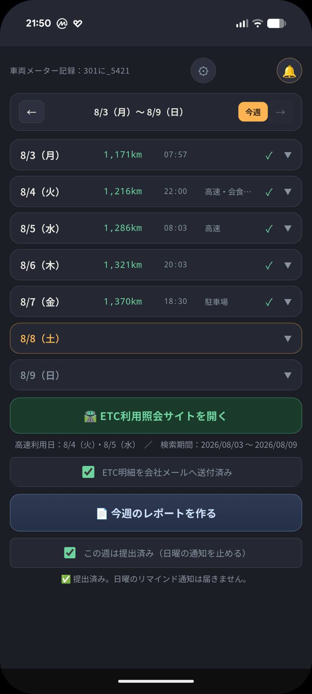

🚗
メタろぐ｜Meter-Log
社有車メーター記録 → 週次レポート自動生成PWA
卒業制作『自分の武器を作る』／第2版
移動の
隙間時間
に打ち終える。
会社PCには
完成版を見て写すだけ
。
7-10分→3分
1件あたりの所要時間（実測）
1
作ったもの

ホーム画面に追加

週別メーター・時刻・タグ
週次レポート画面
（会社様式に準拠した表）
※撮影予定
出力：完成版レポート
📄
会社様式の週次レポート出力
✉️
自分のPCへメール配信
🖨️
紙に印刷して受け渡し
💴
タグ連動の費用入力
⏸️
費用だけ先に一時保存
🧮
距離・合計を自動計算
🕐
時刻の自動／固定2モード
🔔
提出済みなら通知OFF
📶
オフライン対応
＋
設計が変わった瞬間（受講生フィードバック）
🚧
思考停止していた前提
会社PCに繋がらない
→ だからスマホ画面止まり
→
💭
問い直し
繋がらなくても
「受け取れる」形は？
→
📬
出した答え
完成版レポートを
メールと紙で届ける
「制約があるからここまで」で止めず、
制約の外側で価値を届ける方法を考え続ける
。
入力の手数は増やさないまま、出力を
“記録”から“ほぼ完成した提出物”へ
引き上げた。
＋
しくみ（アーキテクチャ）
📱
スマホ（PWA）
移動の隙間時間に
その場で入力
→
週1回
📄
週次レポート生成
会社様式の表に整形
合計まで自動計算
→
メール
✉️
自分のPCへ届く
本文のURLを開くと
同じ表が再現
→
提出
🖥️
会社PC（専用ソフト）
見て写すだけ
PCは一切改変しない
👀
自分で打つ場合
完成版を見ながら写すだけ。思い出す・計算する工程がゼロに。
🤝
事務職へ渡す場合
印刷したレポート＋レシートを手渡せば、入力作業ごと委任できる。
サーバー・DB・AI API 不要／データはURLに内包して受け渡し／運用コスト0円
2
解決する課題
思い出す
→
計算する
→
勤怠を遡る
→
先延ばし → 月末に集中
BEFORE：1件7〜10分
🧠
記憶を頼りにメーター入力
✍️
走行距離を暗算・電卓計算
🕰️
勤怠履歴を遡って時刻確認
📚
4週間分をまとめ処理
→
AFTER：1件3分
✅
払った瞬間・降りた瞬間に記録
⚡
距離・時刻・費用合計は自動
📄
週1回、完成版レポートが届く
🤝
紙で渡せば入力ごと委任できる
3
作りたいと思った理由
😩
自分自身が毎週の面倒に直面していた
🔒
会社PCに手を加えられない制約 → スマホ完結で解決
🤝
同じ悩みを持つ同僚がいて共用化
4
工夫・苦戦
💡 工夫
📬
サーバーなしでPCへ届ける（データをURLに内包）
🏷️
タグを押すと必要な金額欄だけ出る＝入力数を増やさない
⏸️
メーター未確定でも費用だけ先に残せる一時保存
↩️
運行先・時刻は既定値を持たせ、例外時だけ入力
🔥 苦戦
📎
メールにPDFを添付できない制約の回避策探し
⚖️
項目を増やすほど正確、増やすほど面倒というジレンマ
♻️
Service Workerキャッシュの更新遅延
📐
会社様式に寄せた表レイアウトの再現
5
効果の試算と全社展開
個人（実測）
7-10分→3分
1件あたり
→
月間・個人
4分×4週=16分
保守的試算
→
月間・4名
16分×4=64分
同僚も同効果と仮定
→
年間・4名
768分
12.8h／一人3.2h
個人・年間
3.2時間
他業務へ再配分
全社試算（200人）
640時間
200人×年間3.2h
労働日換算
約80日
640時間÷8時間
🏢
サーバー・DB・AI API 不要 →
運用コスト0円・会社PC非改変で全社展開可能
。
さらに紙で渡せば
入力業務そのものを事務職へ委任
でき、削減効果は上振れする。
提案先：総務部
6
これから（発表までの検証計画）
8/9
レポート機能 実装完了
出力・配信・通知
→
1週目
自分で実運用
隙間時間入力を検証
→
2週目
同僚と併走
他者の使い勝手を観察
→
8/28
課題改善して発表
2週間の実体験を添えて